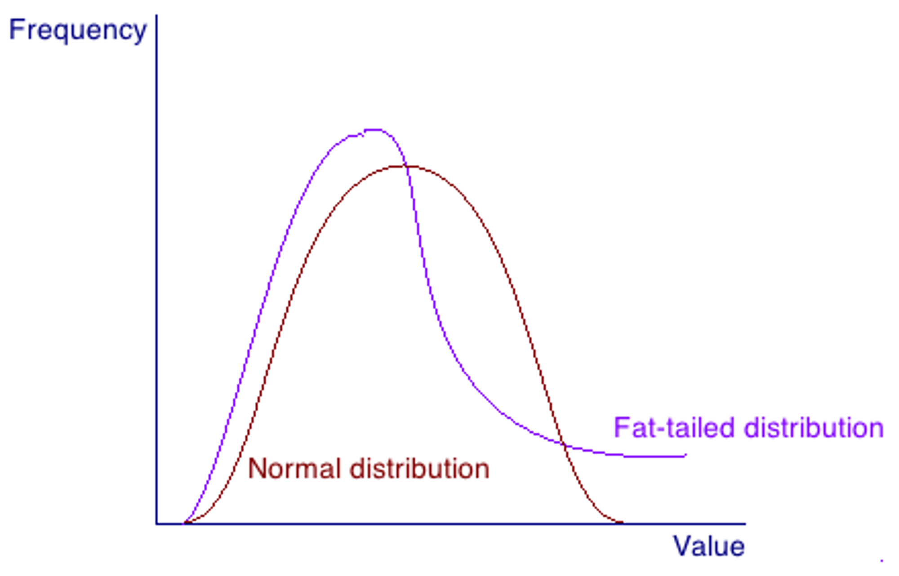
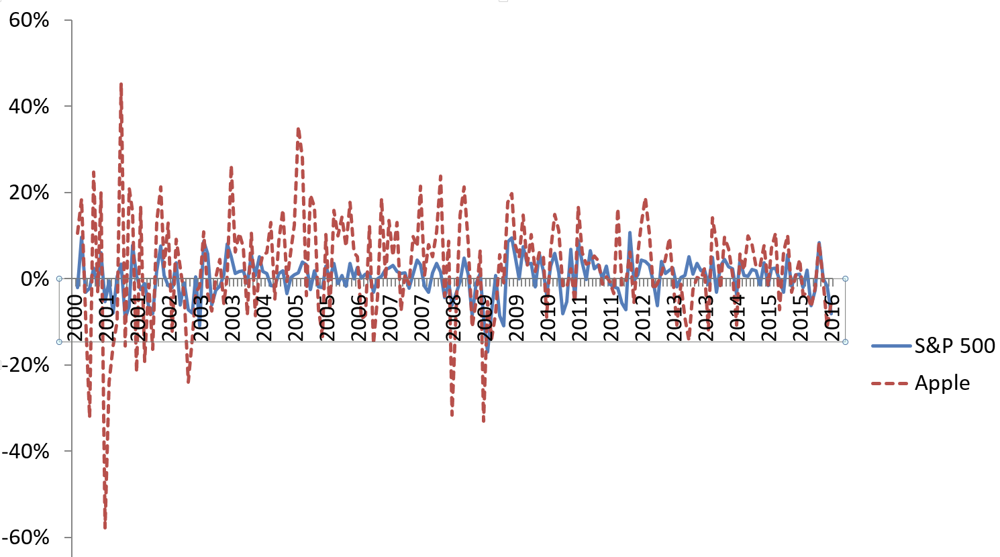

Risk is a fundamental concept in business, I personally call it “The Unknowns”. A world without risks basically means that the future is certain and everybody is perfectly informed. This also contributes to the fact that nothing is absolutely safe. Risk sometimes can be an emotion, such as fear and feeling lost, but it can be investigated through objective quantification analysis. Dealing with such an abstract concept, are we really capable of doing it?
Risk in Quantification
What pops up in your head when you feel something is really “risky”? There’s full of unknowns and different consequences, but what exactly do you mean by it? Like how many of them? How serious are they?
One way to measure risk is Value at Risk (VaR). The risk is measured in time, monetary value and probability. For example, 1% one-year VaR of $10m. This confusing phrase actually means that there’s 1% chance that a value of 10m dollars will lose in one year.
Another way to measure risk is stress test, often ordered by government officials. The basic idea is to investigate capabilities of a company under financial crisis and seek if there are any vulnerabilities, as those are what stress companies the most.
Although stress test sounds nice, it may contribute to a panic among investors if there are bad results. Therefore, the reliability of stress test is in doubt as companies refuse doing it in public. They may also refuse to provide information due to privacy concerns.
Distribution of Stocks Growth
So after talking about some basic ways to quantify risk, Let's talk about how risky the financial market is. Growth rate of stocks seems completely random, but in mathematics, we can express it in probability density function.
It follows fat-tailed distribution instead of normal distribution. They are similar but the former has a very small chance of attaining extreme value due to financial crisis.

Individual stock is way more fluctuating than stock market as a whole. From the graph below, we can observe that apple stock is way noisier than S&P500.


If we graph the performance of S&P500 and Apple in cartesian coordinate plane, we can observe that there are some correlations between the market and Apple. If the stock market declines, Apple also declines most likely.
It's called market risk, as we observe that Apple would respond to the aggregate stock market. Another one risk is idiosyncratic risk, which refers to the specific risks associated with a company's operations or circumstances. Sometimes Apple may make some mistakes itself, such as marketing failure on new products.
Besides, we can draw a regression line. The slope (1.45) of the line illustrates the overreaction of Apple stock price towards the aggregate stock market.
The Importance of Independence
Well, why can we draw a regression line like this? This is related to the covariance between two things, which indicates their interdependence. The slope of regression line indicates how much does Apple react to the whole stock market. When you are building your own portfolio, you shall be careful of the covariance between your options.
Sometimes you may consider that the degree of covariance is directly related to risk. Never put all eggs in one basket, this is such a simple idea that many investors overlook. For example, if your portfolio consists of only tech giants like Google or Apple, you are likely to suffer when there is a decline in the aggregate stock marget specifically related to tech companies. Optimally, we want the covariance approach zero to minimize risk.
In this article, we have learnt some fundamental concepts of risk in stock. Stock represents the value of a company. And so if the company experiences growth, stock must also. But in the free market, human make mistakes and there’s no perfect information. There can be dozens of reasons like irrational panic that could cause a corporation to thrive or collapse. You should always do your own research when investing.